크리스탈 몬스터 파밍은 희귀 드랍과 클래스 경험치를 극대화하기 위한 중요한 Active(직접 플레이) 활동입니다. 이 가이드에서는 크리스탈 스폰 확률의 출처, 보장 크리스탈 스폰, 그리고 각 월드의 최적 사냥터를 설명합니다. 크리스탈 몬스터의 기본 스폰 확률은 1/2,000이지만, 이를 대폭 높이고 나아가 World 4 실험실의 Chocolately Chip을 사용해 반복적으로 스폰시킬 수도 있습니다.
크리스탈 몬스터 기본 정보
크리스탈 몬스터는 Active 상태로 적을 처치하는 동안 기본 확률 1/2,000로 스폰되는 희귀 적입니다. 스폰 맵의 일반 적 기준으로 HP 15배, EXP 30배, 데미지량 2.5배, 명중률 요구치 2.5배를 가지므로 초보 플레이어에게는 위험할 수 있습니다. 각 월드마다 고유한 크리스탈 몬스터 디자인이 있으며, 동상과 황금 음식을 포함한 다양한 희귀 전리품을 드랍합니다.
크리스탈 파밍은 크리스탈 몬스터 스폰 소스를 최대화하고, 크리스탈 몬스터 처치 시 75% 확률로 또 다른 크리스탈을 스폰시키는 World 4 실험실 Chocolately Chip을 활용합니다. Idleon을 열어두고 Auto로 실행하면 다음 목적에 사용할 수 있습니다:
- 클래스 경험치 (모든 캐릭터): 강화된 경험치 배율로 모든 캐릭터의 클래스 경험치를 빠르게 쌓습니다.
- 희귀 드랍 (Divine Knight): Orb Of Remembrance 탤런트로 강화된 드랍률 덕분에 Divine Knight으로 희귀 드랍(주로 동상 파밍) 또는 코인을 파밍합니다.
- 연금술 (Bubonic Conjuror): 크리스탈 몬스터가 추가 처치 수를 제공하므로 Bubonic Conjuror와 Cranium Cooking (Shaman 탤런트)으로 연금술 진행도를 높입니다.
- Crystal Countdown (Maestro): Maestro는 크리스탈 몬스터 처치 수에 따라 스킬링 레벨에 필요한 경험치를 줄이는 고유 Crystal Countdown 탤런트를 보유합니다. 이를 통해 World 1, 2, 3 스킬의 최고 레벨을 유지하여 Right Hand of Action으로 다른 캐릭터의 스킬 효율을 높입니다.
World 2의 Crystal Island에서는 거대 크리스탈 몬스터가 정기적으로 스폰되는데, 이는 일반 크리스탈 몬스터와 다르며 시간 캔디를 드랍합니다. 그러나 이 거대 크리스탈 몬스터도 Chocolately Chip으로 처치 시 일반 크리스탈 몬스터를 스폰시킬 수 있습니다.
스폰 확률 증가 소스
일반 몬스터 처치 후 크리스탈 몬스터가 스폰될 확률을 높이는 소스들입니다.

| 기능 | 출처 | 효과 | 비고 |
|---|---|---|---|
| Cmon Out Crystals | Journeyman 탤런트 | 확률 +150% (레벨 100 탤런트) | 최대 탤런트 레벨과 라이브러리 소스로 추가 증가 가능 |
| Crystals 4 Dayys | World 1 Froggy Fields의 Picnic Stowaway 퀘스트로 획득하는 스타 탤런트 | 확률 +116% (레벨 100 탤런트) | |
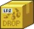 Non Predatory Loot Box |
World 2 Post Office Box | 39% (레벨 400 박스) | |
| Crystallin | World 1 Tucked Away 맵의 Papua Piggea 퀘스트 진행 중 크리스탈 몬스터 드랍 스탬프 | 88% (레벨 200 스탬프) | 보너스를 높이려면 엑솔트(exalt) 업그레이드 권장 |
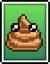 Poop |
World 1 Poopy Sewers의 Poop 적 드랍 | +60% (6성 루비 카드) | 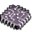 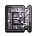 World 4 실험실 Omega Nanochip 또는 Omega Motherboard로 2배 증가 가능 |
 Demon Genie Demon Genie |
World 4 Outskirts of Fallstar Isle의 Genie 적 드랍 | +90% (6성 루비 카드) | 위와 동일하게 2배 증가 가능 |
| Crescent Shrine | World 3 건설 스킬의 성소 | 기본 확률 50% | 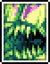 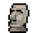 레벨당 7.5% 증가하며 Chaotic Chizoar 패시브 카드 효과로 추가 증가 가능. 처음에는 캐릭터와 같은 맵에 있어야 함. World 4 실험실 Shrine World Tour로 같은 월드 전체 적용으로 변경. World 5 항해 유물 Moai Head로 Idleon 전체 적용 가능. |

기타 버프 소스
크리스탈 몬스터를 더 많이 스폰하거나 스폰을 보장하는 추가 소스들입니다. 보장 스폰은 Active로 게임을 자주 플레이하지 않는 플레이어에게 특히 유용합니다. 일일 초기화 후 짧은 시간 안에 대량의 크리스탈 몬스터를 얻을 수 있기 때문입니다.
| 기능 | 출처 | 효과 | 비고 |
|---|---|---|---|
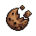 Chocolatey Chip |
World 4 실험실 칩 | 크리스탈 몬스터 처치 시 75% 확률로 또 다른 크리스탈 몬스터 스폰 | 크리스탈 파밍에 엄청난 가속을 주므로, 이 칩을 사용할 수 있을 때까지 본격적인 크리스탈 파밍을 미루는 것을 권장합니다. |
| Crystal Spawn | World 2 Killroy Skull Shop | 다음 처치 시 크리스탈 몬스터 1마리 스폰! 당일 만료! | 더 좋은 킬로이 상점 구매 항목이 있으므로 구매 비권장 |
| Shiny Beacon | World 2 연금술 시길 | 매일 처음 (1/2/5/10)번의 처치 시 크리스탈 몬스터 스폰 | 시길 레벨과 Chilled Yarn 항해 유물로 효과 증가. 처음 두 레벨은 World 4 실험실 Sigils of Olden Alchemy, 세 번째 레벨은 World 6 Jade Emporium Ionized Sigils, 네 번째 레벨은 World 7 7번째 탐험 보스 필요. World 7 레드 5 레전드 탤런트로 매일 천 마리 이상 보장 스폰 가능. |
| Daily Crystal Spawn | World 4 메리트 | 매일 처음 +1번의 처치 시 크리스탈 몬스터 보장 스폰 (최대 3회) | 낮은 우선순위의 W4 메리트이지만 결국 획득하게 되며, World 7 레전드 탤런트로 배수 적용됨 |
| The Plateauourist | World 5 업적 | 일일 크리스탈 몬스터 보장 스폰 +4 | 처음 World 5에 도달할 때 업적 달성. World 7 레전드 탤런트로 배수 적용됨. |
크리스탈 몬스터 최적 사냥터 (전 월드)
아래는 크리스탈 몬스터 파밍을 위해 각 월드에서 권장하는 위치입니다. 일반 적 밀도가 높고 지도 구조가 크리스탈 스폰 확률과 관련 드랍을 극대화하기에 유리한 맵들입니다.

Active 경험치 획득을 위해 크리스탈을 파밍할 경우 가능한 한 가장 먼 맵에서 파밍하세요. 크리스탈 몬스터 EXP는 해당 맵의 적을 기반으로 증가하기 때문입니다. 특정 카드나 몬스터 전용 드랍을 위해 파밍할 수도 있지만, 아래 최적 맵에 비해 크리스탈 몬스터 드랍을 다소 희생하게 됩니다.

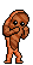


| 월드 | 최적 맵 | 대안 맵 | 비고 |
|---|---|---|---|
| 1 – Crystal Carrot | Frog | Bored Bean | Frogs는 크리스탈 스폰 최적 맵이지만 후반 리스폰 최적화가 필요합니다. 대안으로 Bored Beans에서 파밍하세요. |
| 2 – Crystal Crabal | Tyson | Sandy Pot | Sandy Pot는 크리스탈 희귀 드랍이 약간 적지만 Mason Jar Stamp를 위한 유리 파편이나 기타 필요 재료를 파밍할 수 있습니다. |
| 3 – Crystal Cattle | Dedotated Ram | Neyeptune | Neyeptune는 크리스탈 희귀 드랍이 약간 적지만 Primordial Shrine을 위한 검은 렌즈나 기타 필요 재료를 파밍할 수 있습니다. |
| 4 – Crystal Custard | Clammie | Stilted Seeker | Stilted Seeker는 크리스탈 희귀 드랍이 약간 적지만 Troll's Enclave 키를 파밍할 수 있습니다. |
| 5 – Crystal Capybara | Tremor Wurm | 해당 없음 | Tremor Wurm는 높은 적 밀도로 크리스탈 몬스터를 통한 Cranium Cooking 파밍에 최적입니다. |
| 6 – Crystal Candalight | Minichief Spirit | 해당 없음 |
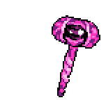
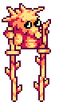

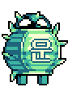